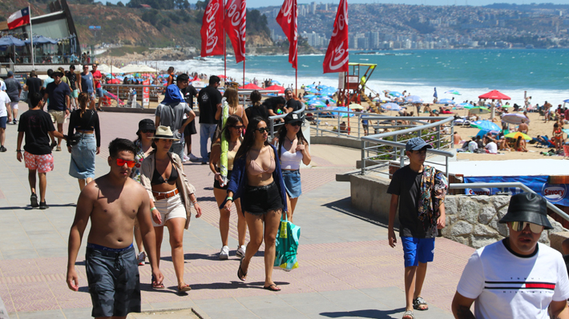

"Es prematuro" y "ha sido positivo": Los balances iniciales del turismo tras la primera quincena de enero
Autor: Pablo San Martin
Fecha y Ubicación: 14 de Enero de 2024 , Chile
Categoría: Ultimo minuto
Según las autoridades, Chile se encuentra cerca de recuperar los niveles previos a la pandemia.
La primera quincena de enero ya se fue y desde el turismo y las asociaciones de gastronomía se comienzan a sacar los primeros balances. Todo, teniendo en cuenta las dudas tras un 2023 con serias dificultades en lo económico. Y es que a fines del año pasado, al hacer proyecciones, algunos hablaban acerca de un "escenario incierto". Tanto por la realidad de la economía por las medidas que el presidente de Argentina, Javier Milei, había comenzado a tomar en ese país, eventualmente afectando el flujo de turistas desde el otro lado de la cordillera.
Es, en alguna medida, por esta razón, que desde la Federación de Empresas de Turismo de Chile (Fedeur) señalan que aún es temprano para las evaluaciones. "Es muy prematuro tener un balance consolidado en estos primeros 15 días", dice la presidente de la entidad, Helen Kouyoumdjian. Agrega, en todo caso, que "como Fedetur proyectamos 25 millones de viajes internos de diciembre a marzo, lo que es -1% en relación con el mismo período del año pasado". Kouyoumdjian destaca, además, un fenómeno que se ha ido volviendo común durante el último tiempo: el de salir de vacaciones en otros periodos. Así, indica, "si bien febrero es el mes con mayor demanda y movimiento, en la actualidad, la tendencia es a que haya una mayor distribución de los visitantes en los destinos locales en los meses de verano, donde incluso las personas tienen como opción los meses de marzo y abril, porque pueden encontrar mejores precios y hay menos aglomeraciones". Desde el mundo de la gastronomía, por otro lado, ven las cifras como positivas. Según explica Máximo Picallo, presidente de la Asociación Chilena de Gastronomía (Achiga), "en general el movimiento ha sido positivo. Bastante turismo interno. Y los turistas argentinos también han estado presentes". En esa línea, destaca que "la actividad del sector gastronómico en los lugares con mayor concurrencia ha sido positiva". Añade, también, que "esperamos que ahora, que estamos entrando al momento más alto de las vacaciones, esto siga aumentando".
Las primeras evaluaciones del Gobierno A comienzos de esta semana la subsecretaria de Turismo, Verónica Pardo, entregó las primeras apreciaciones del Gobierno en relación a las vacaciones. En entrevista con Chilevisión Noticias, Pardo recalcó que el país está cerca de llegar a las cifras pre pandemia. "Ya superamos la demanda interna, 10% más que el año pasado y 17% por sobre pandemia", señaló. Agregó además que "hemos aumentado turistas de otros países", como los brasileros. En relación al turismo argentino, indicó que "tenemos un gran grupo que sigue viajando igual. Tenemos tres regiones que están esperando, porque dependen muchísimo de los turistas argentinos".